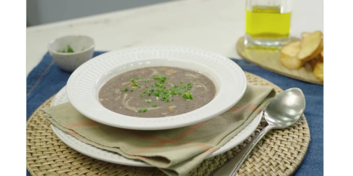

RECEITA - SOPA DE FEIJÃO
INGREDIENTES
- 3 xícaras de chá de feijão cozido
- 1 linguiça calabresa em cubos
- 1 fio de azeite
- 3 dentes de alho picados
- 1 cebola picada
- 1 litro de água
- 2 batatas em cubos
- 250 gramas de espaguete quebrado
- 1 cenoura em cubos
- 1 tablete de caldo de carne
- Cheiro-verde a gosto
MODO DE PREPARO
- No liquidificador, bata 3 xícaras de chá de feijão cozido e 1 linguiça calabresa em cubos até ficar homogêneo. Reserve.
- Em uma panela, refogue 3 dentes de alho picados e 1 cebola picada com 1 fio de azeite. Depois, acrescente 1 litro de água, 2 batatas em cubos, 250 gramas de espaguete quebrado, 1 cenoura em cubos e misture.
- Acrescente 1 tablete de caldo de carne e o feijão reservado. Misture novamente.
- Finalize com cheiro-verde picado a gosto, misture e sirva em seguida.
Voltar